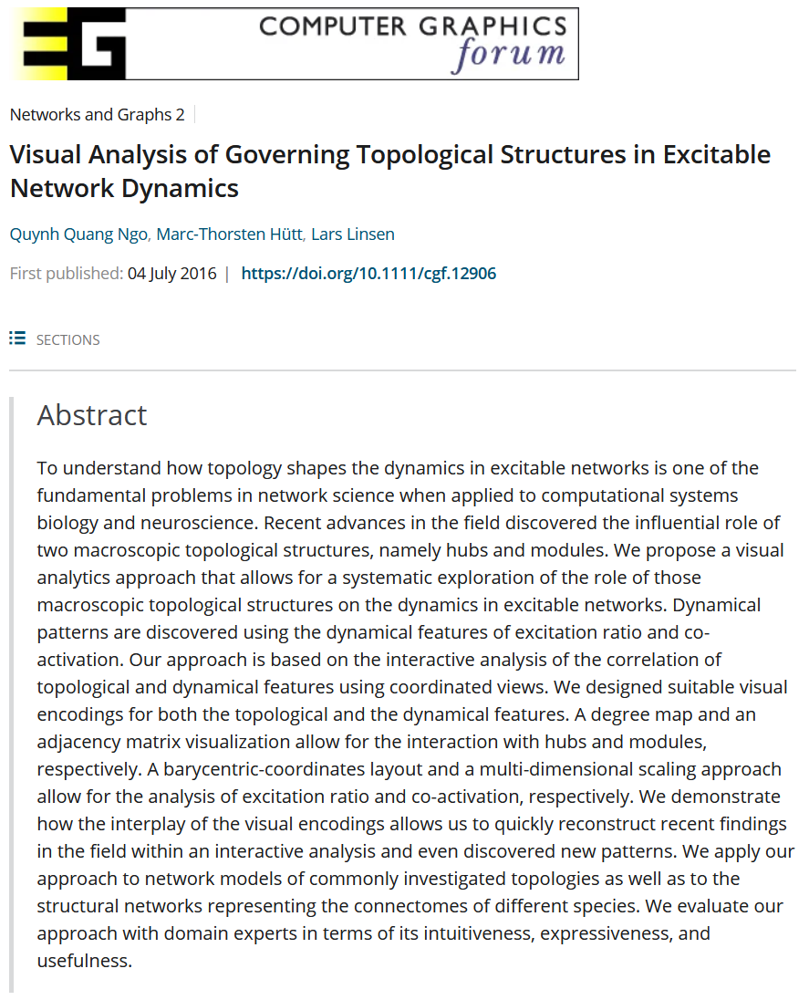

Visual Analysis of Governing Topological Structures in Excitable Network Dynamics


Venue. CGF (2016)
Materials.
DOI
PDF [link]
Abstract. To understand how topology shapes the dynamics in excitable networks is one of the fundamental problems in network science when applied to computational systems biology and neuroscience. Recent advances in the field discovered the influential role of two macroscopic topological structures, namely hubs and modules. We propose a visual analytics approach that allows for a systematic exploration of the role of those macroscopic topological structures on the dynamics in excitable networks. Dynamical patterns are discovered using the dynamical features of excitation ratio and co-activation. Our approach is based on the interactive analysis of the correlation of topological and dynamical features using coordinated views. We designed suitable visual encodings for both the topological and the dynamical features. A degree map and an adjacency matrix visualization allow for the interaction with hubs and modules, respectively. A barycentric-coordinates layout and a multi-dimensional scaling approach allow for the analysis of excitation ratio and co-activation, respectively. We demonstrate how the interplay of the visual encodings allows us to quickly reconstruct recent findings in the field within an interactive analysis and even discovered new patterns. We apply our approach to network models of commonly investigated topologies as well as to the structural networks representing the connectomes of different species. We evaluate our approach with domain experts in terms of its intuitiveness, expressiveness, and usefulness.
Link to this page: